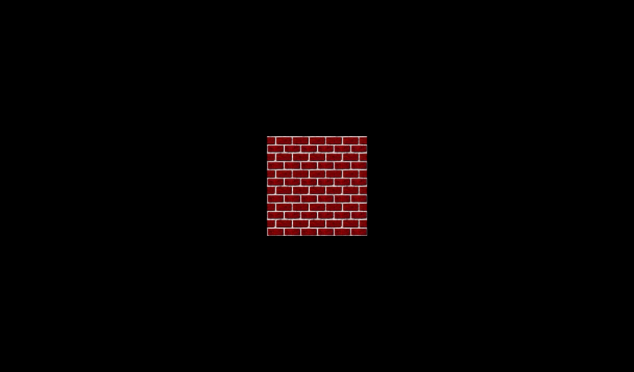

|
Texture images are in a texture coordinate system.
By default, an entire texture image is mapped once around the shape.
You can also extract only pieces of interest, or create repeating patterns.
Texture coordinates and indexes describe a texture cookie cutter.
Texture transforms translate, rotate, and scale place the cookie cutter.
Texture indexes bind the cut-out cookie texture to a face on a shape.
These X3D scenes are adapted directly from the
original VRML 2.0 Sourcebook chapter examples.
Also available:
Introduction to VRML97 SIGGRAPH98 course notes.
|
![[1] Figure18.19TextureCoordinateTest.x3d - Testing 1 2 3](_viewpoints/Figure18.19TextureCoordinateTest.x3d._VP_Testing_1_2_3.png){kind=link}
![[2] Figure18.19TextureCoordinateTest.x3d - (default X3D view from 0 0 10)](_viewpoints/Figure18.19TextureCoordinateTest.x3d._VP_Default_viewpoint.png){kind=link}
![[5] Figure18.21TextureCoordinatePizzaSlice.x3d - Hey pepperoni](_viewpoints/Figure18.21TextureCoordinatePizzaSlice.x3d._VP_Hey_pepperoni.png){kind=link}
![[7] Figure18.22bTextureCoordinateVideoWall.x3d - Transformed texture window](_viewpoints/Figure18.22bTextureCoordinateVideoWall.x3d._VP_Transformed_texture_window.png){kind=link}
![[9] Figure18.23bTextureCoordinateGrillwork.x3d - Transformed texture grillwork](_viewpoints/Figure18.23bTextureCoordinateGrillwork.x3d._VP_Transformed_texture_grillwork.png){kind=link}
![[10] Figure18.23bTextureCoordinateGrillwork.x3d - (default X3D view)](_viewpoints/Figure18.23bTextureCoordinateGrillwork.x3d._VP_Default_viewpoint.png){kind=link}
![[11] Figure18.24TextureCoordinateRotatedGrillworkFence.x3d - Fence made of rotated translated texture grillwork](_viewpoints/Figure18.24TextureCoordinateRotatedGrillworkFence.x3d._VP_Fence_made_of_rotated_translated_texture_grillwork.png){kind=link}
![[12] Figure18.24TextureCoordinateRotatedGrillworkFence.x3d -](_viewpoints/Figure18.24TextureCoordinateRotatedGrillworkFence.x3d._VP_Default_viewpoint.png){kind=link}
![[13] Figure18.25bTextureTransformBrickBox.x3d - Brick Box](_viewpoints/Figure18.25bTextureTransformBrickBox.x3d._VP_Brick_Box.png){kind=link}
![[14] Figure18.25bTextureTransformBrickBox.x3d - (default X3D view)](_viewpoints/Figure18.25bTextureTransformBrickBox.x3d._VP_Default_viewpoint.png){kind=link}
![[15] Figure18.26bUncorrectedTextureSanDiegoBay.x3d - Uncorrected texture, San Diego Bay](_viewpoints/Figure18.26bUncorrectedTextureSanDiegoBay.x3d._VP_Uncorrected_texture,_San_Diego_Bay.png){kind=link}
![[17] Figure18.26cCorrectedTextureSanDiegoBay.x3d - Uncorrected texture, San Diego Bay](_viewpoints/Figure18.26cCorrectedTextureSanDiegoBay.x3d._VP_Uncorrected_texture,_San_Diego_Bay.png){kind=link}
![[19] Figure18.27RotatingFanAnimatedTextureTransform.x3d - That feels good](_viewpoints/Figure18.27RotatingFanAnimatedTextureTransform.x3d._VP_That_feels_good.png){kind=link}
![[20] Figure18.27RotatingFanAnimatedTextureTransform.x3d -](_viewpoints/Figure18.27RotatingFanAnimatedTextureTransform.x3d._VP_Default_viewpoint.png){kind=link}